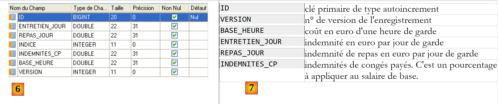
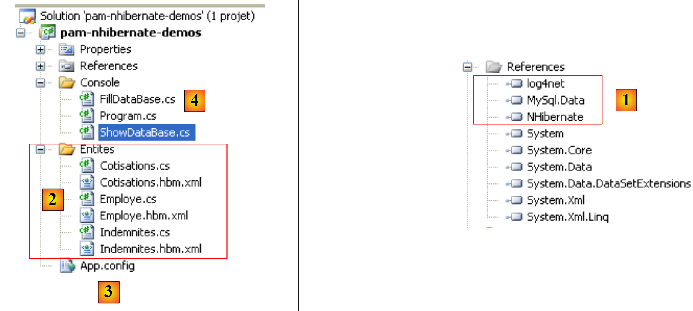
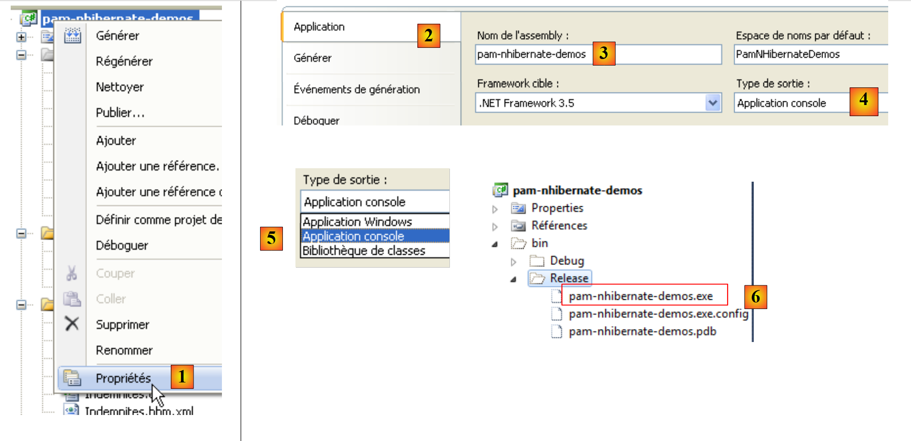
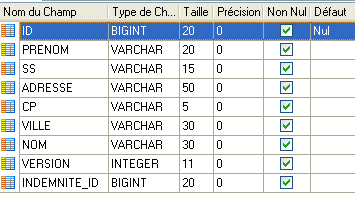

1. Introduzione all'ORM NHibernate
Il PDF di questo documento è disponibile |QUI|.
Gli esempi contenuti nel documento sono disponibili |QUI|.
Questo documento è una breve introduzione a NHibernate, l'equivalente .NET del framework Java Hibernate. Per un'introduzione completa, consultare:
Titolo: NHibernate in Action, Autore: Pierre-Henri Kuaté, Editore: Manning, ISBN-13: 978-1932394924
Un ORM (Object Relational Mapper) è un insieme di librerie che consente a un programma che utilizza un database di interagire con esso senza emettere comandi SQL espliciti e senza conoscere le specifiche del DBMS utilizzato.
Prerequisiti
Su una scala che va da [principiante-intermedio-avanzato], questo documento rientra nella categoria [intermedio]. Per comprenderlo sono necessari diversi prerequisiti che si possono trovare in alcuni dei documenti che ho scritto:
- [Spring IoC], disponibile all'URL [Spring IoC per .NET]. Presenta le basi dell'Inversione di Controllo (IoC) o Iniezione di Dipendenza (DI) nel framework Spring.NET [Spring.NET | Pagina iniziale].
All'inizio dei paragrafi di questo documento vengono talvolta forniti consigli di lettura. Essi fanno riferimento ai documenti precedenti.
Strumenti
Gli strumenti utilizzati in questo caso di studio sono disponibili gratuitamente sul web. Sono i seguenti (dicembre 2011):
- Nhibernate 3.2 disponibile all'indirizzo [http://nhforge.org/Default.aspx]
- Spring.net 1.3.2 disponibile all'URL [http://www.springframework.net]. Il framework Spring.net è molto completo. In questo caso, useremo solo la libreria che fornisce per facilitare l'uso del framework Nhibernate.
- Log4net 1.2.10 disponibile all'indirizzo [http://logging.apache.org/log4net]. Questo framework di logging è utilizzato da Nhibernate.
- NUnit 2.5, disponibile all'indirizzo [http://www.nunit.org/]. Questo framework di test unitari è l'equivalente .NET del framework JUnit per la piattaforma Java.
- Il driver ADO.NET 6.4.4 per il DBMS MySQL 5 è disponibile all'indirizzo [http://dev.mysql.com/downloads/connector/net]
Tutte le DLL necessarie per i progetti Visual Studio 2010 sono state compilate in una cartella [libnet4]:
 |
1.1. Il ruolo di NHIBERNATE in un'architettura .NET a livelli
Un'applicazione .NET che utilizza un database può essere progettata a livelli come segue:
 |
Il livello [DAO] comunica con il DBMS tramite l'API ADO.NET. Esaminiamo i metodi principali di questa API.
In modalità connessa, l'applicazione:
- apre una connessione all'origine dati
- lavora con l'origine dati in modalità lettura/scrittura
- chiude la connessione
Tre interfacce ADO.NET sono principalmente coinvolte in queste operazioni:
- IDbConnection, che incapsula le proprietà e i metodi della connessione.
- IDbCommand, che incapsula le proprietà e i metodi del comando SQL eseguito.
- IDataReader, che incapsula le proprietà e i metodi del risultato di un'istruzione SQL SELECT.
L'interfaccia IDbConnection
viene utilizzata per gestire la connessione al database. Tra i metodi M e le proprietà P di questa interfaccia vi sono i seguenti:
Nome | Tipo | Ruolo |
P | Stringa di connessione al database. Specifica tutti i parametri necessari per stabilire una connessione con un database specifico. | |
M | Apre la connessione al database definito da ConnectionString | |
M | Chiude la connessione | |
M | avvia una transazione. | |
P | Stato della connessione: ConnectionState.Closed, ConnectionState.Open, ConnectionState.Connecting, ConnectionState.Executing, ConnectionState.Fetching, ConnectionState.Broken |
Se Connection è una classe che implementa l'interfaccia IDbConnection, la connessione può essere aperta come segue:
L'interfaccia IDbCommand
viene utilizzata per eseguire un'istruzione SQL o una procedura memorizzata. Tra i metodi M e le proprietà P di questa interfaccia vi sono i seguenti:
Nome | Tipo | Ruolo |
P | specifica cosa eseguire - prende i propri valori da un'enumerazione: - CommandType.Text: esegue l'istruzione SQL definita nella proprietà CommandText. Questo è il valore predefinito. - CommandType.StoredProcedure: esegue una procedura memorizzata nel database | |
P | - il testo dell'istruzione SQL da eseguire se CommandType= CommandType.Text - il nome della procedura memorizzata da eseguire se CommandType= CommandType.StoredProcedure | |
P | la connessione IDbConnection da utilizzare per eseguire l'istruzione SQL | |
P | la transazione IDbTransaction in cui eseguire l'istruzione SQL | |
P | L'elenco dei parametri per un'istruzione SQL parametrizzata. L'istruzione `update articles set price=price*1.1 where id=@id` ha il parametro `@id`. | |
M | Per eseguire un'istruzione SQL SELECT. Restituisce un oggetto IDataReader che rappresenta il risultato dell'istruzione SELECT. | |
M | per eseguire un'istruzione SQL Update, Insert o Delete. Restituisce il numero di righe interessate dall'operazione (aggiornate, inserite o eliminate). | |
M | per eseguire un'istruzione SQL Select che restituisce un singolo risultato, ad esempio: select count(*) from articles. | |
M | per creare i parametri IDbParameter di un'istruzione SQL parametrizzata. | |
M | consente di ottimizzare l'esecuzione di una query parametrizzata quando viene eseguita più volte con parametri diversi. |
Se Command è una classe che implementa l'interfaccia IDbCommand, l'esecuzione di un'istruzione SQL senza transazione assumerà la seguente forma:
L'interfaccia IDataReader
Utilizzata per incapsulare i risultati di un'istruzione SQL Select. Un oggetto IDataReader rappresenta una tabella con righe e colonne, che vengono elaborate in sequenza: prima la prima riga, poi la seconda e così via. Tra i metodi (M) e le proprietà (P) di questa interfaccia vi sono i seguenti:
Nome | Tipo | Ruolo |
P | Il numero di colonne nella tabella IDataReader | |
M | GetName(i) restituisce il nome della colonna i nella tabella IDataReader. | |
P | Item[i] rappresenta la colonna numero i della riga corrente nella tabella IDataReader. | |
M | passa alla riga successiva della tabella IDataReader. Restituisce True se l'operazione di lettura ha avuto esito positivo, altrimenti False. | |
M | Chiude la tabella IDataReader. | |
M | GetBoolean(i): restituisce il valore booleano della colonna i nella riga corrente della tabella IDataReader. Altri metodi simili includono: GetDateTime, GetDecimal, GetDouble, GetFloat, GetInt16, GetInt32, GetInt64, GetString. | |
M | Getvalue(i): restituisce il valore della colonna i nella riga corrente della tabella IDataReader come tipo oggetto. | |
M | IsDBNull(i) restituisce True se la colonna i della riga corrente nella tabella IDataReader non ha alcun valore, il che è rappresentato dal valore SQL NULL. |
L'utilizzo di un oggetto IDataReader spesso si presenta come segue:
Nell'architettura precedente,
 |
il connettore [ADO.NET] è collegato al DBMS. Pertanto, la classe che implementa l'interfaccia [IDbConnection] è:
- la classe [MySQLConnection] per il DBMS MySQL
- la classe [SQLConnection] per il DBMS SQLServer
Il livello [DAO] dipende quindi dal DBMS utilizzato. Alcuni framework (Linq, Ibatis.net, NHibernate) eliminano questo vincolo aggiungendo un livello aggiuntivo tra il livello [DAO] e il connettore [ADO.NET] del DBMS utilizzato. In questo caso, utilizzeremo il framework [NHibernate].
 |
Nel diagramma sopra riportato, il livello [DAO] non comunica più con il connettore [ADO.NET], ma con il framework NHibernate, che gli fornisce un'interfaccia indipendente dal connettore [ADO.NET] utilizzato. Questa architettura consente di cambiare DBMS senza modificare il livello [DAO]. È necessario modificare solo il connettore [ADO.NET].
1.2. Il database di esempio
Per illustrare come lavorare con NHibernate, utilizzeremo il seguente database MySQL [dbpam_nhibernate]:
 |
- In [1], il database contiene tre tabelle:
- [employees]: una tabella che registra i dipendenti di un asilo nido
- [contributions]: una tabella che memorizza le aliquote dei contributi previdenziali
- [payroll]: una tabella che contiene le informazioni utilizzate per calcolare la retribuzione dei dipendenti
Tabella [dipendenti]
 |
- In [2], la tabella dei dipendenti, e in [3], il significato dei suoi campi
Il contenuto della tabella potrebbe essere il seguente:
Tabella [contributi]
 |
- In [4], la tabella dei contributi, e in [5], il significato dei suoi campi
Il contenuto della tabella potrebbe essere il seguente:
Tabella [indennità]
 |
- in [6], la tabella delle indennità, e in [7], il significato dei suoi campi
Il contenuto della tabella potrebbe essere il seguente:
L'esportazione della struttura del database in un file SQL produce il seguente risultato:
Si noti che nelle righe 6, 20 e 36, le chiavi primarie ID hanno l'attributo *<a id="autoincrement"></a> * impostato su *autoincrement*. Ciò significa che MySQL genererà automaticamente i valori della chiave primaria ogni volta che viene aggiunto un nuovo record. Lo sviluppatore non deve preoccuparsi di questo.
1.3. Il progetto demo in C
Per illustrare la configurazione e l'utilizzo di NHibernate, utilizzeremo la seguente architettura:
 |
Un programma console [1] gestirà i dati provenienti dal database [2] tramite il framework [NHibernate] [3]. Questo ci porterà a presentare:
- i file di configurazione di NHibernate
- l'API di NHibernate
Il progetto C# sarà il seguente:
 |
Gli elementi necessari per il progetto sono i seguenti:
- in [1], le DLL richieste dal progetto:
- [NHibernate]: la DLL del framework NHibernate
- [MySql.Data]: la DLL per il connettore ADO.NET del DBMS MySQL
- [log4net]: la DLL del framework Log4net per la generazione dei log
- in [2], le classi che rappresentano le tabelle del database
- in [3], il file [App.config] che configura l'intera applicazione, compreso il framework [NHibernate]
- in [4], applicazioni console di test
1.3.1. Configurazione della connessione al database
Torniamo all'architettura di test:
 |
Come mostrato sopra, [NHibernate] deve poter accedere al database. Per farlo, richiede alcune informazioni:
- il DBMS che gestisce il database (MySQL, SQL Server, Postgres, Oracle, ecc.). La maggior parte dei DBMS ha aggiunto le proprie estensioni al linguaggio SQL. Conoscendo il DBMS, NHibernate può adattare le istruzioni SQL che emette a quel DBMS specifico. NHibernate utilizza il concetto di dialetti SQL.
- i parametri di connessione al database (nome del database, nome utente del proprietario della connessione e password)
Queste informazioni possono essere inserite nel file di configurazione [App.config]. Ecco quello che verrà utilizzato con un database MySQL 5:
<?xml version="1.0" encoding="utf-8" ?>
<configuration>
<!---->
<configSections>
<section name="log4net" type="log4net.Config.Log4NetConfigurationSectionHandler,log4net" />
<section name="hibernate-configuration" type="NHibernate.Cfg.ConfigurationSectionHandler, NHibernate" />
</configSections>
<!---->
<hibernate-configuration xmlns="urn:nhibernate-configuration-2.2">
<session-factory>
<property name="connection.provider">NHibernate.Connection.DriverConnectionProvider</property>
<!-- configuration sections
<property name="connection.driver_class">NHibernate.Driver.MySqlDataDriver</property>
-->
<property name="dialect">NHibernate.Dialect.MySQL5Dialect</property>
<property name="connection.connection_string">
Server=localhost;Database=dbpam_nhibernate;Uid=root;Pwd=;
</property>
<property name="show_sql">false</property>
<mapping assembly="pam-nhibernate-demos"/>
</session-factory>
</hibernate-configuration>
<!-- configuration NHibernate -->
<!-- This section contains the log4net configuration settings
! -->
<log4net>
<!-- NOTE IMPORTANTE: logs are not active by default. They must be activated programmatically with the log4net.Config.XmlConfigurator.Configure() instruction;-->
<appender name="LogFileAppender" type="log4net.Appender.FileAppender, log4net">
<param name="File" value="log.txt" />
<param name="AppendToFile" value="false" />
<layout type="log4net.Layout.PatternLayout, log4net">
<param name="ConversionPattern" value="%d [%t] %-5p %c [%x] <%X{auth}> - %m%n" />
</layout>
</appender>
<appender name="LogDebugAppender" type="log4net.Appender.DebugAppender, log4net">
<layout type="log4net.Layout.PatternLayout, log4net">
<param name="ConversionPattern" value="%d [%t] %-5p %c [%x] <%X{auth}> - %m%n"/>
</layout>
</appender>
<appender name="ConsoleAppender" type="log4net.Appender.ConsoleAppender, log4net">
<layout type="log4net.Layout.PatternLayout, log4net">
<param name="ConversionPattern" value="%d [%t] %-5p %c [%x] <%X{auth}> - %m%n"/>
</layout>
</appender>
<!-- Define an output appender (where the logs can go) -->
<root>
<priority value="INFO" />
<!-- Setup the root category, set the default priority level and add the appender(s) (where the logs will go)
<appender-ref ref="LogFileAppender" />
<appender-ref ref="LogDebugAppender"/>
-->
<appender-ref ref="ConsoleAppender"/>
</root>
<!-- Specify the level for some specific namespaces -->
<!-- Level can be : ALL, DEBUG, INFO, WARN, ERROR, FATAL, OFF -->
<logger name="NHibernate">
<level value="INFO" />
</logger>
</log4net>
</configuration>
- Righe 4–7: definiscono le sezioni di configurazione nel file [App.config]. Si consideri la riga 6:
<section name="hibernate-configuration" type="NHibernate.Cfg.ConfigurationSectionHandler, NHibernate" />
Questa riga definisce la sezione di configurazione NHibernate nel file [App.config]. Ha due attributi: name e type.
- L'attributo [name] assegna un nome alla sezione di configurazione. Questa sezione deve essere delimitata qui dai tag <name>...</name>, in questo caso <hibernate-configuration>...</hibernate-configuration> nelle righe 11–24.
- L'attributo [type=class,DLL] specifica il nome della classe responsabile della gestione della sezione definita dall'attributo [name], nonché la DLL contenente tale classe. In questo caso, la classe si chiama [NHibernate.Cfg.ConfigurationSectionHandler] e si trova nella DLL [NHibernate.dll]. Ricordiamo che questa DLL è uno dei riferimenti nel progetto in esame.
Ora diamo un'occhiata alla sezione di configurazione di NHibernate:
<!-- configuration NHibernate -->
<hibernate-configuration xmlns="urn:nhibernate-configuration-2.2">
<session-factory>
<property name="connection.provider">NHibernate.Connection.DriverConnectionProvider</property>
<!--
<property name="connection.driver_class">NHibernate.Driver.MySqlDataDriver</property>
-->
<property name="dialect">NHibernate.Dialect.MySQL5Dialect</property>
<property name="connection.connection_string">
Server=localhost;Database=dbpam_nhibernate;Uid=root;Pwd=;
</property>
<property name="show_sql">false</property>
<mapping assembly="pam-nhibernate-demos"/>
</session-factory>
</hibernate-configuration>
- Riga 2: La configurazione di NHibernate è contenuta all'interno di un tag <hibernate-configuration>. L'attributo xmlns (XML Namespace) specifica la versione utilizzata per configurare NHibernate. Nel corso del tempo, il modo in cui NHibernate viene configurato si è evoluto. Qui viene utilizzata la versione 2.2.
- Riga 3: L'intera configurazione di NHibernate è contenuta all'interno del tag <session-factory> (righe 3 e 14). Una sessione NHibernate è lo strumento utilizzato per lavorare con un database in base allo schema:
- aprire una sessione
- lavorare con il database utilizzando i metodi dell'API NHibernate
- chiudere la sessione
La sessione viene creata da una factory, un termine generico che si riferisce a una classe in grado di creare oggetti. Le righe 3-14 configurano questa factory.
- Righe 4, 6, 8, 9: configurano la connessione al database di destinazione. Le informazioni principali includono il nome del DBMS utilizzato, il nome del database, l'ID utente e la password.
- Riga 4: definisce il provider di connessione, l'entità da cui viene richiesta una connessione al database. Il valore della proprietà [connection.provider] è il nome di una classe NHibernate. Questa proprietà è indipendente dal DBMS utilizzato.
- Riga 6: il driver ADO.NET da utilizzare. Si tratta del nome di una classe NHibernate specializzata per un determinato DBMS, in questo caso MySQL. La riga 6 è stata commentata perché non è essenziale.
- Riga 8: la proprietà [dialect] imposta il dialetto SQL da utilizzare con il DBMS. In questo caso, si tratta del dialetto del DBMS MySQL.
Se si cambia DBMS, come si trova il dialetto NHibernate corrispondente? Tornare al progetto C# precedente e fare doppio clic sulla DLL [NHibernate] nella scheda [Riferimenti]:
 |
- In [1], la scheda [Esplora oggetti] mostra una serie di DLL, comprese quelle a cui fa riferimento il progetto.
- In [2], la DLL [NHibernate]
- In [3], la DLL [NHibernate]. Qui è possibile vedere i vari spazi dei nomi definiti al suo interno.
- in [4], lo spazio dei nomi [NHibernate.Dialect], dove si trovano le classi che definiscono i vari dialetti SQL utilizzabili.
- in [5], la classe del dialetto per il DBMS MySQL 5.
 |
- in [6], lo spazio dei nomi della classe [MySqlDataDriver] utilizzata alla riga 6 qui sotto:
<!-- configuration NHibernate -->
<hibernate-configuration xmlns="urn:nhibernate-configuration-2.2">
<session-factory>
<property name="connection.provider">NHibernate.Connection.DriverConnectionProvider</property>
<!--
<property name="connection.driver_class">NHibernate.Driver.MySqlDataDriver</property>
-->
<property name="dialect">NHibernate.Dialect.MySQLDialect</property>
<property name="connection.connection_string">
Server=localhost;Database=dbpam_nhibernate;Uid=root;Pwd=;
</property>
<property name="show_sql">false</property>
<mapping assembly="pam-nhibernate-demos"/>
</session-factory>
</hibernate-configuration>
- Righe 9–11: la stringa di connessione al database. Questa stringa ha il formato "param1=val1;param2=val2; ...". L'insieme di parametri così definiti consente al driver DBMS di stabilire una connessione. Il formato di questa stringa di connessione dipende dal DBMS utilizzato. Le stringhe di connessione per i principali DBMS sono disponibili sul sito web [http://www.connectionstrings.com/]. In questo caso, la stringa "Server=localhost;Database=dbpam_nhibernate;Uid=root;Pwd=;" è una stringa di connessione per il DBMS MySQL. Essa indica che:
- Server=localhost; : il DBMS si trova sulla stessa macchina del client che sta tentando di aprire la connessione
- Database=dbpam_nhibernate; : il database MySQL di destinazione
- Uid=root; : l'utente che apre la connessione è l'utente root
- Pwd=; : questo utente non ha una password (un caso speciale in questo esempio)
- Riga 12: La proprietà [show_sql] specifica se NHibernate deve visualizzare nei propri log le istruzioni SQL che invia al database. Durante lo sviluppo, è utile impostare questa proprietà su [true] per vedere esattamente cosa sta facendo NHibernate.
- Riga 13: Per comprendere il tag <mapping>, rivediamo l'architettura dell'applicazione:
 |
Se il programma console fosse un client diretto del connettore ADO.NET e volesse l'elenco dei dipendenti, farebbe eseguire al connettore un'istruzione SQL SELECT e riceverebbe in cambio un oggetto IDataReader che dovrebbe elaborare per ottenere l'elenco dei dipendenti inizialmente richiesto.
Nell'esempio sopra riportato, il programma console è il client di NHibernate, mentre NHibernate è il client del connettore ADO.NET. Vedremo in seguito che l'API di NHibernate consentirà al programma console di richiedere l'elenco dei dipendenti. NHibernate tradurrà questa richiesta in un'istruzione SQL SELECT che farà eseguire al connettore ADO.NET. Il connettore restituirà un oggetto di tipo IDataReader. Da questo oggetto, NHibernate deve essere in grado di costruire l'elenco dei dipendenti richiesto. Ciò è reso possibile dalla configurazione. Ogni tabella nel database è associata a una classe C#. Pertanto, sulla base delle righe della tabella [employees] restituite dall'IDataReader, NHibernate sarà in grado di costruire un elenco di oggetti che rappresentano i dipendenti e di restituirlo al programma console. Queste mappature da tabella a classe sono definite nei file di configurazione. NHibernate utilizza il termine "mappatura" per descrivere queste relazioni.
Torniamo alla riga 13 qui sotto:
<!-- configuration NHibernate -->
<hibernate-configuration xmlns="urn:nhibernate-configuration-2.2">
<session-factory>
<property name="connection.provider">NHibernate.Connection.DriverConnectionProvider</property>
<!--
<property name="connection.driver_class">NHibernate.Driver.MySqlDataDriver</property>
-->
<property name="dialect">NHibernate.Dialect.MySQL5Dialect</property>
<property name="connection.connection_string">
Server=localhost;Database=dbpam_nhibernate;Uid=root;Pwd=;
</property>
<property name="show_sql">false</property>
<mapping assembly="pam-nhibernate-demos"/>
</session-factory>
</hibernate-configuration>
La riga 13 specifica che i file di configurazione della mappatura da tabella a classe si trovano nell'assembly [pam-nhibernate-demos]. Un assembly è l'eseguibile o la DLL generata dalla compilazione di un progetto. In questo caso, i file di mappatura saranno inseriti nell'assembly del progetto di esempio. Per individuare il nome di questo assembly, controllare le proprietà del progetto:
 |
- in [1], le proprietà del progetto
- nella scheda [Applicazione] [2], il nome dell'assembly [3] che verrà generato.
- Poiché il tipo di output è [Applicazione console] [4], il file generato al momento della compilazione del progetto sarà denominato [pam-nhibernate-demos.exe]. Se il tipo di output fosse [Libreria di classi] [5], il file generato al momento della compilazione del progetto sarebbe denominato [pam-nhibernate-demos.dll]
- L'assembly viene generato nella cartella [bin/Release] del progetto [6].
Dalla spiegazione precedente, si noti che la tabella di mappatura <--> file di classe deve essere inclusa nel file [pam-nhibernate-demos.exe] [6].
1.3.2. Configurazione della tabella di mappatura <-->class
Torniamo all'architettura del progetto in esame:
 |
- In [1], il programma console utilizza i metodi dell'API del framework NHibernate. Questi due blocchi si scambiano oggetti.
- In [2], NHibernate utilizza l'API di un connettore .NET. Invia comandi SQL al DBMS di destinazione.
Il programma console gestirà oggetti che rispecchiano le tabelle del database. In questo progetto, questi oggetti e i collegamenti che li legano alle tabelle del database sono stati inseriti nella cartella [Entities] qui sotto:
 |
- Ogni tabella del database corrisponde a una classe e a un file di mappatura tra le due
Tabella | Tabella | Mappatura |
contributi | MembershipFees.cs | Contributions.hbm.xml |
dipendenti | Employee.cs | Dipendente.hbm.xml |
indennità | Indennità.cs | Indennità.hbm.xml |
1.3.2.1. Mappatura della tabella [contributions]
Consideriamo la tabella [contributions]:
 |
|
Una riga di questa tabella può essere incapsulata in un oggetto di tipo [ Cotisations.cs] come segue:
namespace PamNHibernateDemos {
public class Cotisations {
// automatic properties
public virtual int Id { get; set; }
public virtual int Version { get; set; }
public virtual double CsgRds { get; set; }
public virtual double Csgd { get; set; }
public virtual double Secu { get; set; }
public virtual double Retraite { get; set; }
// manufacturers
public Cotisations() {
}
// ToString
public override string ToString() {
return string.Format("[{0}|{1}|{2}|{3}]", CsgRds, Csgd, Secu, Retraite);
}
}
}
Abbiamo creato una proprietà automatica per ogni colonna della tabella [contributions]. Ciascuna di queste proprietà deve essere dichiarata come virtuale perché NHibernate deriverà la classe e sovrascriverà le sue proprietà. Pertanto, queste proprietà devono essere virtuali.
Si noti, alla riga 1, che la classe appartiene allo spazio dei nomi [PamNHibernateDemos].
Il file di mappatura [Cotisations.hbm.xml] tra la tabella [cotisations] e la classe [Cotisations] è il seguente:
<?xml version="1.0" encoding="utf-8" ?>
<hibernate-mapping xmlns="urn:nhibernate-mapping-2.2"
namespace="PamNHibernateDemos" assembly="pam-nhibernate-demos">
<class name="Cotisations" table="COTISATIONS">
<id name="Id" column="ID" unsaved-value="0">
<generator class="native" />
</id>
<version name="Version" column="VERSION"/>
<property name="CsgRds" column="CSGRDS"/>
<property name="Csgd" column="CSGD"/>
<property name="Retraite" column="RETRAITE"/>
<property name="Secu" column="SECU"/>
</class>
</hibernate-mapping>
- Il file di mappatura è un file XML definito all'interno del tag <hibernate-mapping> (righe 2 e 14)
- Riga 4: Il tag <class> collega una tabella del database a una classe. In questo caso, la tabella [COTISATIONS] (attributo table) e la classe [Cotisations] (attributo name). In .NET, una classe deve essere definita dal suo nome completo (incluso lo spazio dei nomi) e dall'assembly che la contiene. Queste due informazioni sono fornite dalla riga 3. La prima (spazio dei nomi) si trova nella definizione della classe. La seconda (assembly) è il nome dell'assembly del progetto. Abbiamo già spiegato come trovare questo nome.
- Righe 5–7: Il tag <id> viene utilizzato per definire la mappatura della chiave primaria della tabella [contributions].
- Riga 5: L'attributo name specifica il campo nella classe [Cotisations] che conterrà la chiave primaria della tabella [cotisations]. L'attributo column specifica la colonna nella tabella [cotisations] che funge da chiave primaria. L'attributo unsaved-value viene utilizzato per definire una chiave primaria che non è stata ancora generata. Questo valore permette a NHibernate di sapere come salvare un oggetto [Cotisations] nella tabella [cotisations]. Se questo oggetto ha un campo Id impostato a 0, eseguirà un'operazione SQL INSERT; altrimenti, eseguirà un'operazione SQL UPDATE. Il valore di unsaved-value dipende dal tipo del campo Id nella classe [Cotisations]. In questo caso, è di tipo int e il valore predefinito per un tipo int è 0. Un oggetto [Cotisations] che non è stato ancora salvato (e quindi non ha una chiave primaria) avrà quindi il campo Id impostato su 0. Se il campo Id fosse stato di tipo Object o di un tipo derivato, avremmo scritto unsaved-value=null.
- Riga 6: Quando NHibernate deve salvare un oggetto [Cotisations] con un campo Id impostato su 0, deve eseguire un'operazione INSERT sul database, durante la quale deve ottenere un valore per la chiave primaria del record. La maggior parte dei DBMS dispone di un metodo proprietario per generare automaticamente questo valore. Il tag <generator> viene utilizzato per definire il meccanismo da utilizzare per la generazione della chiave primaria. Il tag <generator class="native"> indica che deve essere impiegato il meccanismo predefinito del DBMS in uso. Abbiamo visto nella Sezione 1.2 che le chiavi primarie delle nostre tre tabelle MySQL avevano l'attributo autoincrement. Durante le sue operazioni INSERT, NHibernate non fornirà un valore per la colonna ID del record aggiunto, consentendo a MySQL di generare questo valore.
- Riga 8: Il tag <version> viene utilizzato per definire la colonna della tabella (così come il campo di classe corrispondente) che consente di "versionarizzare" i record. Inizialmente, la versione è impostata su 1. Viene incrementata ad ogni operazione UPDATE. Inoltre, ogni operazione UPDATE o DELETE viene eseguita con una clausola WHERE: ID=id AND VERSION=v1. Un utente può quindi modificare o eliminare un oggetto solo se ne possiede la versione corretta. In caso contrario, NHibernate genera un'eccezione.
- Riga 9: Il tag <property> viene utilizzato per definire una normale mappatura di colonna (né una chiave primaria né una colonna di versione). Pertanto, la riga 9 indica che la colonna CSGRDS della tabella [COTISATIONS] è associata alla proprietà CsgRds della classe [Cotisations].
1.3.2.2. Mappatura della tabella [indemnites]
Consideriamo la tabella [indemnites]:
 |
|
Una riga di questa tabella può essere incapsulata in un oggetto di tipo [ Indemnites] come segue:
namespace PamNHibernateDemos {
public class Indemnites {
// automatic properties
public virtual int Id { get; set; }
public virtual int Version { get; set; }
public virtual int Indice { get; set; }
public virtual double BaseHeure { get; set; }
public virtual double EntretienJour { get; set; }
public virtual double RepasJour { get; set; }
public virtual double IndemnitesCp { get; set; }
// manufacturers
public Indemnites() {
}
// identity
public override string ToString() {
return string.Format("[{0}|{1}|{2}|{3}|{4}]", Indice, BaseHeure, EntretienJour, RepasJour, IndemnitesCp);
}
}
}
Il file di mappatura per la tabella [indemnites] <--> classe [Indemnites] potrebbe essere il seguente (Indemnites.hbm.xml):
<?xml version="1.0" encoding="utf-8" ?>
<hibernate-mapping xmlns="urn:nhibernate-mapping-2.2"
namespace="PamNHibernateDemos" assembly="pam-nhibernate-demos">
<class name="Indemnites" table="INDEMNITES">
<id name="Id" column="ID" unsaved-value="0">
<generator class="native" />
</id>
<version name="Version" column="VERSION"/>
<property name="Indice" column="INDICE" unique="true"/>
<property name="BaseHeure" column="BASE_HEURE" />
<property name="EntretienJour" column="ENTRETIEN_JOUR" />
<property name="RepasJour" column="REPAS_JOUR" />
<property name="IndemnitesCp" column="INDEMNITES_CP" />
</class>
</hibernate-mapping>
Non c'è nulla di nuovo qui rispetto al file di mappatura spiegato in precedenza. L'unica differenza è alla riga 9. L'attributo unique="true" indica che esiste un vincolo di unicità sulla colonna [INDICE] nella tabella [indemnites]: non possono esserci due righe con lo stesso valore per la colonna [INDICE].
1.3.2.3. Mappatura della tabella [employes]
Consideriamo la tabella [employes]:
 |
|
La novità rispetto alle tabelle precedenti è la presenza di una chiave esterna: la colonna [INDEMNITE_ID] è una chiave esterna sulla colonna [ID] della tabella [INDEMNITES]. Questo campo fa riferimento alla riga della tabella [INDEMNITES] da utilizzare per il calcolo delle indennità del dipendente.
La classe [ Employe] che rappresenta la tabella [employes] potrebbe essere la seguente:
namespace PamNHibernateDemos {
public class Employe {
// automatic properties
public virtual int Id { get; set; }
public virtual int Version { get; set; }
public virtual string SS { get; set; }
public virtual string Nom { get; set; }
public virtual string Prenom { get; set; }
public virtual string Adresse { get; set; }
public virtual string Ville { get; set; }
public virtual string CodePostal { get; set; }
public virtual Indemnites Indemnites { get; set; }
// manufacturers
public Employe() {
}
// ToString
public override string ToString() {
return string.Format("[{0}|{1}|{2}|{3}|{4}|{5}|{6}]", SS, Nom, Prenom, Adresse, Ville, CodePostal, Indemnites);
}
}
}
Il file di mappatura [Employee.hbm.xml] potrebbe avere questo aspetto:
<?xml version="1.0" encoding="utf-8" ?>
<hibernate-mapping xmlns="urn:nhibernate-mapping-2.2"
namespace="PamNHibernateDemos" assembly="pam-nhibernate-demos">
<class name="Employe" table="EMPLOYES">
<id name="Id" column="ID" unsaved-value="0">
<generator class="native" />
</id>
<version name="Version" column="VERSION"/>
<property name="SS" column="SS"/>
<property name="Nom" column="NOM"/>
<property name="Prenom" column="PRENOM"/>
<property name="Adresse" column="ADRESSE"/>
<property name="Ville" column="VILLE"/>
<property name="CodePostal" column="CP"/>
<many-to-one name="Indemnites" column="INDEMNITE_ID" cascade="save-update" lazy="false"/>
</class>
</hibernate-mapping>
La nuova funzionalità si trova alla riga 15 con l'introduzione di un nuovo tag: <many-to-one>. Questo tag viene utilizzato per mappare una colonna di chiave esterna [INDEMNITE_ID] dalla tabella [EMPLOYEES] alla proprietà [Benefits] della classe [Employee]:
namespace PamNHibernateDemos {
public class Employe {
// automatic properties
..
public virtual Indemnites Indemnites { get; set; }
...
}
}
La tabella [EMPLOYEES] ha una chiave esterna [INDEMNITY_ID] che fa riferimento alla colonna [ID] nella tabella [INDEMNITIES]. Più (molte) righe nella tabella [EMPLOYEES] possono fare riferimento a una singola (una) riga nella tabella [BENEFITS]. Da qui il nome del tag <many-to-one>. Questo tag ha i seguenti attributi:
- column: specifica il nome della colonna nella tabella [EMPLOYEES] che funge da chiave esterna nella tabella [BENEFITS]
- name: specifica la proprietà della classe [Employee] associata a questa colonna. Il tipo di questa proprietà deve essere la classe associata alla tabella di destinazione della chiave esterna, in questo caso la tabella [Compensation]. Sappiamo che questa classe è la classe [Indemnites] già descritta. Ciò si riflette nella riga 5 sopra. Ciò significa che quando NHibernate recupera un oggetto [Employee] dal database, recupererà anche l'oggetto [Indemnites] corrispondente.
- cascade: questo attributo può assumere vari valori:
- save-update: un'operazione di inserimento (save) o aggiornamento sull'oggetto [Employee] deve essere propagata all'oggetto [Benefits] che contiene.
- delete: l'eliminazione di un oggetto [Employee] deve propagarsi all'oggetto [Benefits] che contiene.
- all: propaga le operazioni di inserimento (salvataggio), aggiornamento ed eliminazione.
- none: non propaga nulla
Infine, rivediamo la configurazione di NHibernate nel file [App.config]:
<!-- configuration NHibernate -->
<hibernate-configuration xmlns="urn:nhibernate-configuration-2.2">
<session-factory>
<property name="connection.provider">NHibernate.Connection.DriverConnectionProvider</property>
<!--
<property name="connection.driver_class">NHibernate.Driver.MySqlDataDriver</property>
-->
<property name="dialect">NHibernate.Dialect.MySQL5Dialect</property>
<property name="connection.connection_string">
Server=localhost;Database=dbpam_nhibernate;Uid=root;Pwd=;
</property>
<property name="show_sql">false</property>
<mapping assembly="pam-nhibernate-demos"/>
</session-factory>
</hibernate-configuration>
La riga 13 specifica che i file di mappatura *.hbm.xml si trovano nell'assembly [pam-nhibernate-demos]. Questo non è il comportamento predefinito. È necessario configurarlo nel progetto C#:
 |
- In [1], selezionare le proprietà di un file di mappatura
- in [2], l'azione di generazione deve essere [Risorsa incorporata] [3]. Ciò significa che quando il progetto viene generato, il file di mappatura deve essere incorporato nell'assembly generato.
1.4. L'API di NHibernate
Torniamo all'architettura del nostro progetto di esempio:
 |
Nelle sezioni precedenti abbiamo configurato NHibernate in due modi:
- In [App.config], abbiamo configurato la connessione al database
- per ogni tabella del database, abbiamo scritto la classe che rappresenta quella tabella e il file di mappatura che ci permette di convertire la classe in tabella e viceversa.
Dobbiamo ancora esplorare i metodi offerti da NHibernate per la manipolazione dei dati del database: insert, update, delete e list.
1.4.1. L'oggetto SessionFactory
Ogni operazione NHibernate avviene all'interno di una sessione. Una sequenza tipica di operazioni NHibernate è la seguente:
- aprire una sessione NHibernate
- avviare una transazione all'interno della sessione
- eseguire operazioni di persistenza con la sessione (Load, Get, Find, CreateQuery, Save, SaveOrUpdate, Delete)
- confermare o annullare la transazione
- chiudere la sessione NHibernate
Una sessione viene ottenuta da una factory [SessionFactory]. Questa factory è quella configurata dal tag <session-factory> nel file di configurazione [App.config]:
<!-- configuration NHibernate -->
<hibernate-configuration xmlns="urn:nhibernate-configuration-2.2">
<session-factory>
<property name="connection.provider">NHibernate.Connection.DriverConnectionProvider</property>
<!--
<property name="connection.driver_class">NHibernate.Driver.MySqlDataDriver</property>
-->
<property name="dialect">NHibernate.Dialect.MySQL5Dialect</property>
<property name="connection.connection_string">
Server=localhost;Database=dbpam_nhibernate;Uid=root;Pwd=;
</property>
<property name="show_sql">false</property>
<mapping assembly="pam-nhibernate-demos"/>
</session-factory>
</hibernate-configuration>
Nel codice C#, la SessionFactory può essere ottenuta come segue:
ISessionFactory sessionFactory = new Configuration().Configure().BuildSessionFactory();
La classe Configuration è una classe del framework NHibernate. L'istruzione precedente utilizza la sezione di configurazione NHibernate in [App.config]. L'oggetto [ISessionFactory] risultante dispone quindi delle:
- informazioni per creare una connessione al database di destinazione
- file di mappatura tra le tabelle del database e le classi persistenti gestite da NHibernate.
1.4.2. La sessione NHibernate
Una volta creata la SessionFactory (operazione che viene eseguita una sola volta), è possibile ottenere le sessioni necessarie per eseguire le operazioni di persistenza di NHibernate. Un frammento di codice comune è il seguente:
try{
// session opening
using (ISession session = sessionFactory.OpenSession())
{
// start of transaction
using (ITransaction transaction = session.BeginTransaction())
{
........................ opérations de persistance
// transaction validation
transaction.Commit();
}
}
}catch (Exception ex){
....
}
- Riga 3: una sessione viene creata dalla SessionFactory all'interno di un blocco using. Al termine del blocco using, la sessione verrà chiusa automaticamente. Senza il blocco using, la sessione dovrebbe essere chiusa esplicitamente (session.Close()).
- Riga 6: le operazioni di persistenza verranno eseguite all'interno di una transazione. O avranno tutte esito positivo, oppure nessuna di esse avrà esito positivo. All'interno del blocco using, la transazione viene confermata con un Commit (riga 10). Se un'operazione di persistenza all'interno della transazione genera un'eccezione, la transazione verrà automaticamente annullata all'uscita dal blocco using.
- I blocchi try/catch alle righe 1 e 13 consentono di intercettare eventuali eccezioni generate dal codice all'interno del blocco try (sessione, transazione, persistenza).
1.4.3. L'interfaccia ISession
Presenteremo ora alcuni dei metodi dell'interfaccia ISession implementati da una sessione NHibernate:
avvia una transazione nella sessione ITransaction tx = session.BeginTransaction(); | |
cancella la sessione. Gli oggetti in essa contenuti vengono scollegati. session.Clear(); | |
Chiude la sessione. Gli oggetti in essa contenuti vengono sincronizzati con il database. Questa operazione di sincronizzazione viene eseguita anche al termine di una transazione. Quest'ultimo caso è il più comune. session.Close(); | |
crea una query HQL (Hibernate Query Language) per l'esecuzione successiva. IQuery query = session.createQuery("select e from Employee e"); | |
elimina un oggetto. Questo oggetto può appartenere alla sessione (attaccato) oppure no (staccato). Quando la sessione è sincronizzata con il database, su questo oggetto verrà eseguita un'operazione SQL DELETE. // carica un dipendente dal database Employee e = session.Get<Employee>(143); // eliminarlo session.Delete(e); | |
Forza la sincronizzazione della sessione con il database. Il contenuto della sessione non cambia. session.Flush(); | |
recupera l'oggetto T con chiave primaria id dal database. Se questo oggetto non esiste, restituisce un puntatore nullo. // Carica un dipendente dal database Employee e = session.Get<Employee>(143); | |
aggiunge l'oggetto obj alla sessione. Questo oggetto non ha una chiave primaria prima del Save. Dopo il Save, ne ha una. Quando la sessione viene sincronizzata, verrà eseguita un'operazione SQL INSERT sul database. // Crea un dipendente Employee e = new Employee(){...}; // salvarlo e = session.Save(e); | |
Esegue un'operazione di salvataggio se obj non dispone di una chiave primaria, oppure un'operazione di aggiornamento se ne possiede già una. | |
aggiorna l'oggetto obj nel database. Viene quindi eseguita un'operazione SQL UPDATE sul database. // Carica un dipendente dal database Employee e = session.Get<Employee>(143); // modifica il suo nome e.Name = ...; // Aggiorna il dipendente nel database session.Update(e); |
1.4.4. L'interfaccia IQuery
L'interfaccia IQuery consente di interrogare il database per estrarre dati. Abbiamo visto come crearne un'istanza:
Il parametro del metodo createQuery è una query HQL (Hibernate Query Language), un linguaggio simile a SQL ma che interroga le classi anziché le tabelle. La query sopra riportata recupera un elenco di tutti i dipendenti. Ecco alcuni esempi di query HQL:
select e from Employe e where e.Nom like 'A%'
select e from Employe order by e.Nom asc
select e from Employe e where e.Indemnites.Indice=2
Presenteremo ora alcuni dei metodi dell'interfaccia IQuery:
restituisce il risultato della query come un elenco di oggetti T IList<Employee> employees = session.createQuery("select e from Employee e order by e.Name asc").List<Employee>(); | |
restituisce il risultato della query come un elenco in cui ogni elemento dell'elenco rappresenta una riga della query SELECT sotto forma di un array di oggetti. IList rows = session.createQuery("select e.LastName, e.FirstName, e.SS from Employee e").List(); lines[i][j] rappresenta la colonna j della riga i come oggetto. Pertanto, lines[10][1] è un oggetto che rappresenta il nome di una persona. Generalmente è necessario il type casting per recuperare i dati nel loro tipo esatto. | |
restituisce il primo oggetto dal risultato della query Employee e = session.createQuery("select e from Employee e where e.LastName='MARTIN'").UniqueResult<Employee>(); |
Una query HQL può essere parametrizzata:
Nella query HQL alla riga 3, :num è un parametro a cui deve essere assegnato un valore prima dell'esecuzione della query. Sopra, il metodo SetString viene utilizzato a questo scopo. L'interfaccia IQuery fornisce vari metodi Set per assegnare un valore a un parametro:
- - SetBoolean(string name, bool value)
- - SetSingle(string name, single value)
- - SetDouble(string name, double value)
- - SetInt32(string name, int32 value)
- ..
1.5. Alcuni esempi di codice
Gli esempi seguenti si basano sull'architettura discussa in precedenza e riassunta di seguito. Il database è il database MySQL [dbpam_nhibernate] anch'esso presentato. Gli esempi sono programmi da console [1] che utilizzano il framework NHibernate [3] per manipolare il database [2].
 |
Il progetto C# contenente gli esempi che seguono è quello già presentato:
 |
- in [1], le DLL richieste dal progetto:
- [NHibernate]: la DLL del framework NHibernate
- [MySql.Data]: la DLL per il connettore ADO.NET per il DBMS MySQL 5
- [log4net]: la DLL per uno strumento di registrazione
- in [2], le classi che rappresentano le tabelle del database
- in [3], il file [App.config] che configura l'intera applicazione, compreso il framework [NHibernate]
- in [4], applicazioni console di test. È proprio questo che presenteremo in parte.
1.5.1. Recupero dei contenuti del database
Il programma [ShowDataBase.cs] visualizza il contenuto del database:
using System;
using System.Collections;
using System.Collections.Generic;
using NHibernate;
using NHibernate.Cfg;
namespace PamNHibernateDemos
{
public class ShowDataBase
{
private static ISessionFactory sessionFactory = null;
// main program
static void Main(string[] args)
{
// factory initialization NHibernate
sessionFactory = new Configuration().Configure().BuildSessionFactory();
try
{
// database content display
Console.WriteLine("Affichage base -------------------------------------");
ShowDataBase1();
}
catch (Exception ex)
{
// we display the exception
Console.WriteLine(string.Format("L'erreur suivante s'est produite : [{0}]", ex.ToString()));
}
finally
{
if (sessionFactory != null)
{
sessionFactory.Close();
}
}
// keyboard wait
Console.ReadLine();
}
// test1
static void ShowDataBase1()
{
// session opening
using (ISession session = sessionFactory.OpenSession())
{
// start of transaction
using (ITransaction transaction = session.BeginTransaction())
{
// retrieve the list of employees
IList<Employe> employes = session.CreateQuery(@"select e from Employe e order by e.Nom asc").List<Employe>();
// we display it
Console.WriteLine("--------------- liste des employés");
foreach (Employe e in employes)
{
Console.WriteLine(e);
}
// retrieve the list of benefits
IList<Indemnites> indemnites = session.CreateQuery(@"select i from Indemnites i order by i.Indice asc").List<Indemnites>();
// we display it
Console.WriteLine("--------------- liste des indemnités");
foreach (Indemnites i in indemnites)
{
Console.WriteLine(i);
}
// retrieve the list of contributions
Cotisations cotisations = session.CreateQuery(@"select c from Cotisations c").UniqueResult<Cotisations>();
Console.WriteLine("--------------- tableau des taux de cotisations");
Console.WriteLine(cotisations);
// commit transaction
transaction.Commit();
}
}
}
}
}
Spiegazioni:
- riga 19: viene creato l'oggetto SessionFactory. Questo ci consentirà di ottenere oggetti Session.
- riga 24: viene visualizzato il contenuto del database
- Righe 31–37: SessionFactory viene chiusa nella clausola finally del blocco try.
- riga 43: il metodo che visualizza il contenuto del database
- Riga 46: otteniamo una Session dalla SessionFactory.
- Riga 49: viene avviata una transazione
- Riga 52: query HQL per recuperare l'elenco dei dipendenti. Grazie alla chiave esterna che collega l'entità Employee all'entità Compensation, ogni dipendente avrà la propria retribuzione.
- Riga 60: query HQL per recuperare l'elenco delle indennità.
- Riga 68: query HQL per recuperare la singola riga dalla tabella contributions.
- Riga 72: Fine della transazione
- Riga 73: Fine di `using ITransaction` dalla riga 49 – la transazione viene chiusa automaticamente
- Riga 74: Fine di `using Isession` dalla riga 46 – la sessione viene chiusa automaticamente.
Visualizzazione sullo schermo:
Si noti che nelle righe 3 e 4, quando si effettuava una ricerca su un dipendente, veniva restituita anche la sua retribuzione.
1.5.2. Inserimento dei dati nel database
Il programma [FillDataBase.cs] consente di inserire dati nel database:
using System;
using System.Collections;
using System.Collections.Generic;
using NHibernate;
using NHibernate.Cfg;
namespace PamNHibernateDemos
{
public class FillDataBase
{
private static ISessionFactory sessionFactory = null;
// main program
static void Main(string[] args)
{
// factory initialization NHibernate
sessionFactory = new Configuration().Configure().BuildSessionFactory();
try
{
// delete database contents
Console.WriteLine("Effacement base -------------------------------------");
ClearDataBase1();
Console.WriteLine("Affichage base -------------------------------------");
ShowDataBase();
Console.WriteLine("Remplissage base -------------------------------------");
FillDataBase1();
Console.WriteLine("Affichage base -------------------------------------");
ShowDataBase();
}
catch (Exception ex)
{
// exception is displayed
Console.WriteLine(string.Format("L'erreur suivante s'est produite : [{0}]", ex.ToString()));
}
finally
{
if (sessionFactory != null)
{
sessionFactory.Close();
}
}
// keyboard wait
Console.ReadLine();
}
// test1
static void ShowDataBase()
{
// see previous example
}
// ClearDataBase1
static void ClearDataBase1()
{
// session opening
using (ISession session = sessionFactory.OpenSession())
{
// start of transaction
using (ITransaction transaction = session.BeginTransaction())
{
// retrieve the list of employees
IList<Employe> employes = session.CreateQuery(@"select e from Employe e").List<Employe>();
// we cut all employees
Console.WriteLine("--------------- suppression des employés associés");
foreach (Employe e in employes)
{
session.Delete(e);
}
// retrieve the list of allowances
IList<Indemnites> indemnites = session.CreateQuery(@"select i from Indemnites i").List<Indemnites>();
// we do away with allowances
Console.WriteLine("--------------- suppression des indemnités");
foreach (Indemnites i in indemnites)
{
session.Delete(i);
}
// retrieve the list of contributions
Cotisations cotisations = session.CreateQuery(@"select c from Cotisations c").UniqueResult<Cotisations>();
Console.WriteLine("--------------- suppression des taux de cotisations");
if (cotisations != null)
{
session.Delete(cotisations);
}
// commit transaction
transaction.Commit();
}
}
}
// FillDataBase
static void FillDataBase1()
{
// session opening
using (ISession session = sessionFactory.OpenSession())
{
// start of transaction
using (ITransaction transaction = session.BeginTransaction())
{
// two allowances are created
Indemnites i1 = new Indemnites() { Id = 0, Indice = 1, BaseHeure = 1.93, EntretienJour = 2, RepasJour = 3, IndemnitesCp = 12 };
Indemnites i2 = new Indemnites() { Id = 0, Indice = 2, BaseHeure = 2.1, EntretienJour = 2.1, RepasJour = 3.1, IndemnitesCp = 15 };
// we create two employees
Employe e1 = new Employe() { Id = 0, SS = "254104940426058", Nom = "Jouveinal", Prenom = "Marie", Adresse = "5 rue des oiseaux", Ville = "St Corentin", CodePostal = "49203", Indemnites = i1 };
Employe e2 = new Employe() { Id = 0, SS = "260124402111742", Nom = "Laverti", Prenom = "Justine", Adresse = "La Brûlerie", Ville = "St Marcel", CodePostal = "49014", Indemnites = i2 };
// we create the contribution rates
Cotisations cotisations = new Cotisations() { Id = 0, CsgRds = 3.49, Csgd = 6.15, Secu = 9.39, Retraite = 7.88 };
// save it all
session.Save(e1);
session.Save(e2);
session.Save(cotisations);
// commit transaction
transaction.Commit();
}
}
}
}
}
Spiegazioni
- riga 19: viene creata la SessionFactory
- Righe 37–43: viene chiusa all'interno della clausola `finally` del blocco `try`
- Riga 55: il metodo ClearDataBase1, che cancella il database. Il processo è il seguente:
- Recuperiamo tutti i dipendenti (riga 64) in un elenco
- li eliminiamo uno per uno (righe 67–70)
- Riga 93: il metodo FillDataBase1 inserisce alcuni dati nel database
- creiamo due entità Indemnites (righe 102, 103)
- creiamo due dipendenti con queste indennità (righe 105, 106)
- Creiamo un oggetto Cotisations alla riga 108.
- Righe 110, 111: le due entità Employee vengono salvate nel database
- riga 112: l'entità Cotisations viene a sua volta salvata
- Potrebbe sembrare sorprendente che le entità "Indemnities" alle righe 102 e 103 non siano state salvate. In realtà, sono state salvate contemporaneamente alle entità "Employee". Per capirlo, dobbiamo esaminare la mappatura dell'entità "Employee":
<?xml version="1.0" encoding="utf-8" ?>
<hibernate-mapping xmlns="urn:nhibernate-mapping-2.2"
namespace="PamNHibernateDemos" assembly="pam-nhibernate-demos">
<class name="Employe" table="EMPLOYES">
<id name="Id" column="ID" unsaved-value="0">
<generator class="native" />
</id>
<version name="Version" column="VERSION"/>
<property name="SS" column="SS"/>
<property name="Nom" column="NOM"/>
<property name="Prenom" column="PRENOM"/>
<property name="Adresse" column="ADRESSE"/>
<property name="Ville" column="VILLE"/>
<property name="CodePostal" column="CP"/>
<many-to-one name="Indemnites" column="INDEMNITE_ID" cascade="save-update" lazy="false"/>
</class>
</hibernate-mapping>
La riga 15, che mappa la relazione di chiave esterna tra l'entità Employee e l'entità Allowances, presenta l'attributo cascade="save-update", il che significa che le operazioni "save" e "update" sull'entità Employee vengono propagate all'entità interna Allowances.
Visualizzazione ottenuta sullo schermo:
Effacement base -------------------------------------
--------------- suppression des employés et des indemnités associées
--------------- suppression des indemnités restantes
--------------- suppression des taux de cotisations
Affichage base -------------------------------------
--------------- liste des employés
--------------- liste des indemnités
--------------- tableau des taux de cotisations
Remplissage base -------------------------------------
Affichage base -------------------------------------
--------------- liste des employés
[254104940426058|Jouveinal|Marie|5 rue des oiseaux|St Corentin|49203|[2|2,1|2,1|3,1|15]]
[260124402111742|Laverti|Justine|La Brûlerie|St Marcel|49014|[1|1,93|2|3|12]]
--------------- liste des indemnités
[1|1,93|2|3|12]
[2|2,1|2,1|3,1|15]
--------------- tableau des taux de cotisations
[3,49|6,15|9,39|7,88]
[3.49|6.15|9.39|7.88]
1.5.3. Ricerca di un dipendente
Il programma [Program.cs] contiene vari metodi che mostrano come accedere e manipolare i dati del database. Ne presentiamo alcuni qui di seguito.
Il metodo [FindEmployee] consente di trovare un dipendente in base al suo numero di previdenza sociale:
// FindEmployee
static void FindEmployee() {
try {
// session opening
using (ISession session = sessionFactory.OpenSession()) {
// start of transaction
using (ITransaction transaction = session.BeginTransaction()) {
// search for an employee using his SS number
String numSecu = "254104940426058";
IQuery query = session.CreateQuery(@"select e from Employe e where e.SS=:numSecu");
Employe employe = query.SetString("numSecu", numSecu).UniqueResult<Employe>();
if (employe != null) {
Console.WriteLine("Employe[" + numSecu + "]=" + employe);
} else {
Console.WriteLine("Employe[" + numSecu + "] non trouvé...");
}
numSecu = "xx";
employe = query.SetString("numSecu", numSecu).UniqueResult<Employe>();
if (employe != null) {
Console.WriteLine("Employe[" + numSecu + "]=" + employe);
} else {
Console.WriteLine("Employe[" + numSecu + "] non trouvé...");
}
// commit transaction
transaction.Commit();
}
}
} catch (Exception e) {
Console.WriteLine("L'exception suivante s'est produite : " + e.Message);
}
}
Spiegazioni
- riga 10: la query Select configurata da numSecu da eseguire
- riga 11: Assegnazione di un valore al parametro numSecu ed esecuzione del metodo UniqueResult per restituire un unico risultato.
Schermata ottenuta:
Recherche d'un employé -------------------------------------
Employe[254104940426058]=[254104940426058|Jouveinal|Marie|5 rue des oiseaux|St Corentin|49203|[2|2,1|2,1|3,1|15]]
Employe[xx] non trouvé...
1.5.4. Inserimento di entità non valide
Il seguente metodo tenta di salvare un'entità [Employee] non inizializzata.
// SaveEmptyEmployee
static void SaveEmptyEmployee() {
try {
// session opening
using (ISession session = sessionFactory.OpenSession()) {
// start of transaction
using (ITransaction transaction = session.BeginTransaction()) {
// create an empty employee
Employe e = new Employe();
// we create a non-existent indemnity
Indemnites i = new Indemnites() { Id = 0, Indice = 3, BaseHeure = 1.93, EntretienJour = 2, RepasJour = 3, IndemnitesCp = 12 };
// associated with the employee
e.Indemnites = i;
// save the employee, leaving the other fields empty
session.Save(e);
// commit transaction
transaction.Commit();
}
}
} catch (Exception e) {
Console.WriteLine("L'exception suivante s'est produite : " + e.Message);
}
}
Spiegazioni
Rivediamo il codice della classe [Employee]:
namespace PamNHibernateDemos {
public class Employe {
// automatic properties
public virtual int Id { get; set; }
public virtual int Version { get; set; }
public virtual string SS { get; set; }
public virtual string Nom { get; set; }
public virtual string Prenom { get; set; }
public virtual string Adresse { get; set; }
public virtual string Ville { get; set; }
public virtual string CodePostal { get; set; }
public virtual Indemnites Indemnites { get; set; }
// manufacturers
public Employe() {
}
// ToString
public override string ToString() {
return string.Format("[{0}|{1}|{2}|{3}|{4}|{5}|{6}]", SS, Nom, Prenom, Adresse, Ville, CodePostal, Indemnites);
}
}
}
Un oggetto [Employee] non inizializzato avrà un valore nullo per tutti i suoi campi stringa. Quando si inserisce il record nella tabella [employees], NHibernate lascerà vuote le colonne corrispondenti a questi campi. Tuttavia, nella tabella [employees], tutte le colonne hanno l'attributo not null, che impedisce alle colonne di non avere alcun valore. Il driver ADO.NET genererà quindi un'eccezione:
1.5.5. Creazione di due indennità con lo stesso indice all'interno di una transazione
Nella tabella [indemnites], la colonna [index] è stata dichiarata con l'attributo unique, che impedisce a due righe di avere lo stesso indice. Il seguente metodo crea due indennità con lo stesso indice all'interno di una transazione:
// CreateIndemnites1
static void CreateIndemnites1() {
try {
// session opening
using (ISession session = sessionFactory.OpenSession()) {
// start of transaction
using (ITransaction transaction = session.BeginTransaction()) {
// we create two allowances with the same index
Indemnites i1 = new Indemnites() { Id = 0, Indice = 1, BaseHeure = 1.93, EntretienJour = 2, RepasJour = 3, IndemnitesCp = 12 };
Indemnites i2 = new Indemnites() { Id = 0, Indice = 1, BaseHeure = 1.93, EntretienJour = 2, RepasJour = 3, IndemnitesCp = 12 };
// we save them
session.Save(i1);
session.Save(i2);
// commit transaction
transaction.Commit();
}
}
} catch (Exception e) {
Console.WriteLine("L'exception suivante s'est produite : " + e.Message);
}
}
Spiegazioni
- Nelle righe 9 e 10 vengono create due entità Indemnites con lo stesso indice. Tuttavia, nel database, la colonna INDEX ha il vincolo UNIQUE.
- Le righe 12 e 13 inseriscono le due entità Indemnites nel contesto di persistenza. Questo contesto viene sincronizzato con il database quando la transazione viene confermata alla riga 15. Questa sincronizzazione attiverà due istruzioni INSERT. La seconda causerà un'eccezione a causa del vincolo di unicità sulla colonna INDICE. Poiché ci troviamo all'interno di una transazione, il primo INSERT verrà annullato.
Il risultato è il seguente:
Riga 9: Si può notare che la tabella [indemnites] è vuota. Non è stato effettuato alcun inserimento.
1.5.6. Creazione di due indennità con lo stesso indice senza transazione
Il metodo seguente crea due indennità con lo stesso indice senza utilizzare una transazione:
// CreateIndemnites2
static void CreateIndemnites2() {
try {
// session opening
using (ISession session = sessionFactory.OpenSession()) {
// we create two allowances with the same index
Indemnites i1 = new Indemnites() { Id = 0, Indice = 1, BaseHeure = 1.93, EntretienJour = 2, RepasJour = 3, IndemnitesCp = 12 };
Indemnites i2 = new Indemnites() { Id = 0, Indice = 1, BaseHeure = 1.94, EntretienJour = 2, RepasJour = 3, IndemnitesCp = 12 };
// we save them
session.Save(i1);
session.Save(i2);
}
} catch (Exception e) {
Console.WriteLine("L'exception suivante s'est produite : " + e.Message);
}
}
Spiegazioni
- Abbiamo lo stesso codice di prima, ma senza una transazione.
- La sincronizzazione del contesto di persistenza con il database avverrà quando questo contesto verrà chiuso, alla riga 13 (chiusura della Session). La sincronizzazione attiverà due istruzioni INSERT. La seconda fallirà a causa del vincolo di unicità sulla colonna INDICE. Tuttavia, poiché non siamo in una transazione, il primo INSERT non verrà annullato.
Il risultato è il seguente:
Il database era vuoto prima dell'esecuzione del metodo. Alla riga 6, possiamo vedere che la tabella [indemnites] contiene una riga.